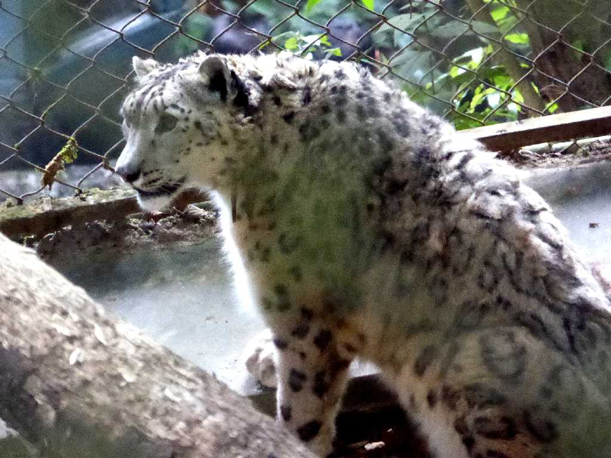
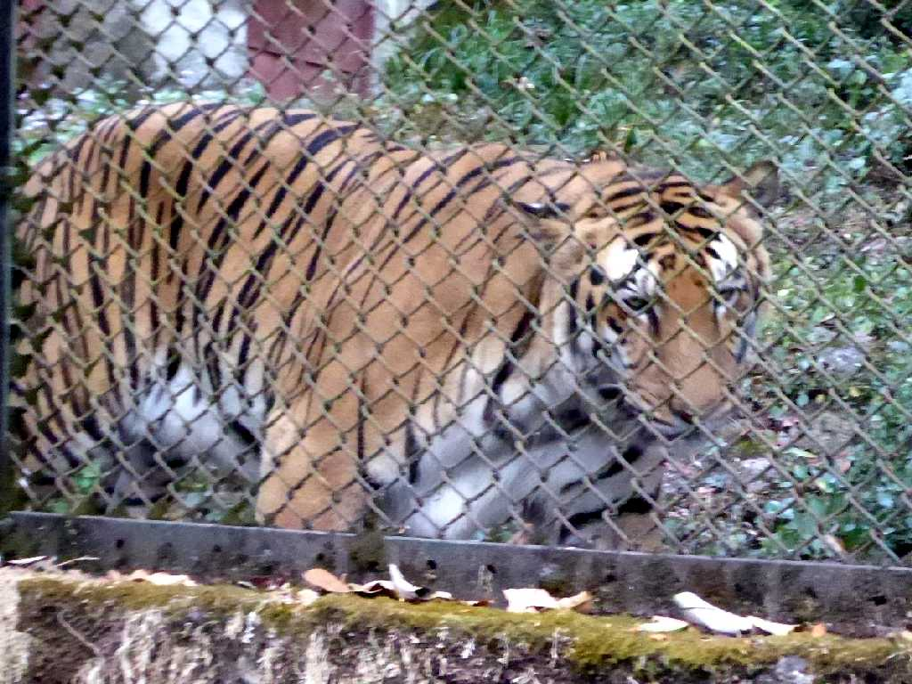
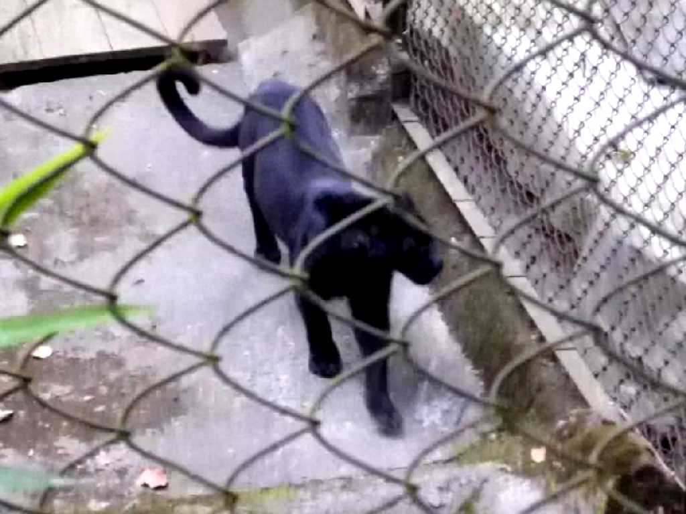
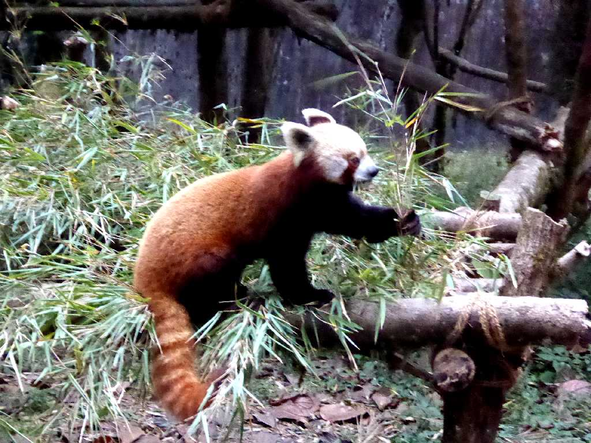
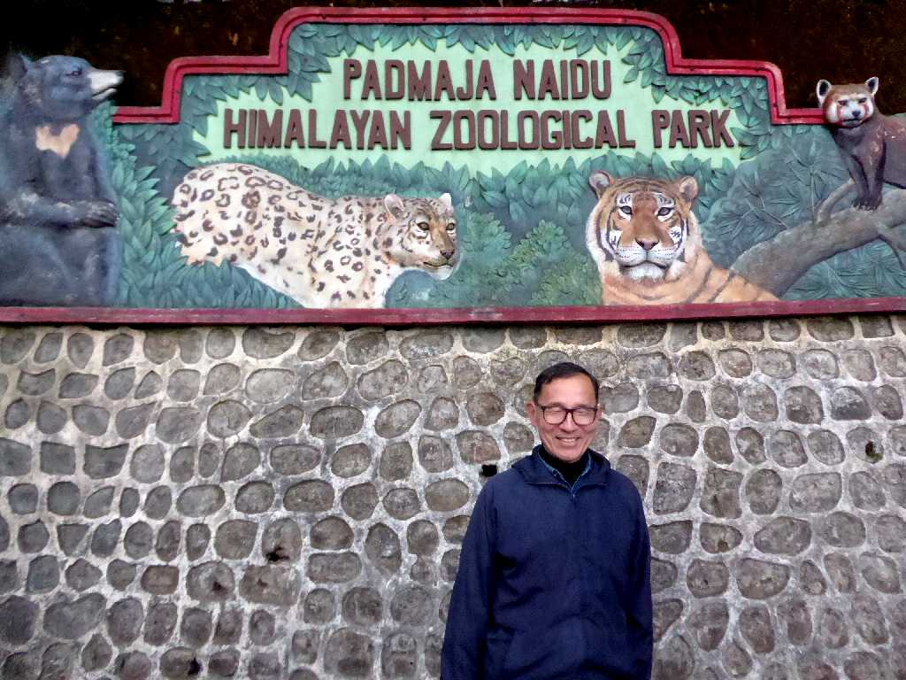

Snow Leopard Himalayan Zoological Park Darjeeling
雪の降る地域に生きる豹でヒマラヤ山脈に生息する絶滅危惧種の雪豹

Bengal Tiger
虎の中でも大型で体長３ｍ体重２５０ｋｇほどになる絶滅危惧種のベンガルトラは自然界の王者とも云われる

Black Leopard
斑紋の黒い毛が全身に回った豹の突然変異種とされる黒豹

Lesser Panda
ヒマラヤ山脈に生息するレッサーパンダは小型で愛嬌がある

November 29 2017 Himalayan Zoological Park